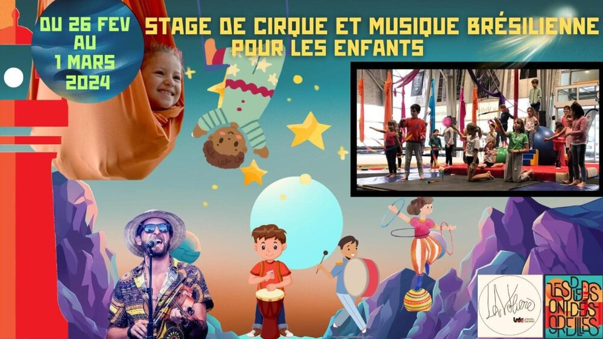

Stages pour enfants : cirque et musique brésilienne

Lieu : La Volière, 60 rue de la Ville Halluard, Saint-Nazaire
Stages pour enfants de 3 à 11 ans, du lundi 26 février au vendredi 1er mars 2024, encadrés par un·e intervenant·e cirque de La Volière et un intervenant musique brésilienne de l'association.
Cirque : acrobatie, équilibres, jonglerie, agrès aériens. Musique brésilienne : jeux de rythmes, instruments brésiliens (pandeiro, agogo, zabumba, ganzas), chansons, fabrication de petits instruments de carnaval.
Les participants étaient invités au carnaval de l'association le samedi 2 mars.